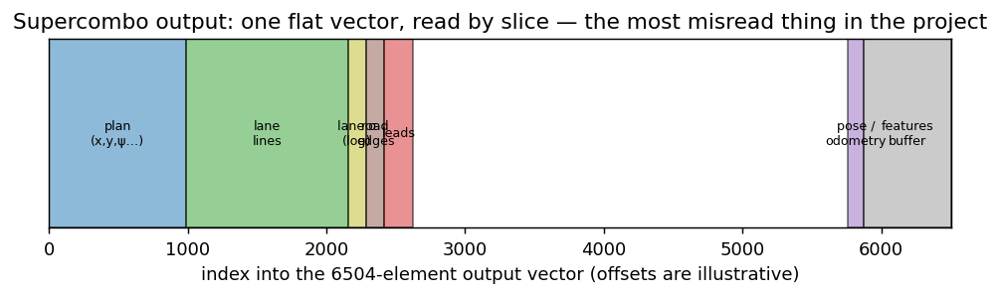

Supercombo on Device#
We want the phone to turn a windshield camera frame into the vision/lanes contract from the overview.
The network is a single model from the openpilot / flowpilot family — supercombo 0.9.7, seven inputs, output
width 6504 — and it ships twice: as assets/supercombo.onnx (fp32) and as assets/supercombo.thneed, the same
network in fp16 for the GPU, generated from that same ONNX. Whichever runner is selected, the network is the
same one, which is what makes the two paths comparable at all.
Step 1: put the frame into the geometry the model expects#
The network was trained on one camera in one mounting position. Ours is neither, so before inference the frame is warped into openpilot’s canonical “medmodel” geometry — 512×256, focal 910 px — with the learned mounting angles taken out. That homography, why it depends on two separate calibrations, and what a 1.5° remount does to it, are the subject of Three calibrations, not one. Read that first if you have not.
Two consequences to carry into this chapter:
the model sees a derived image, so its output inherits every calibration error upstream;
the warp is not free. It used to cost 7 ms at the median and 35.7 ms at p95 on the CPU, and that tail was exactly where the reference aged past 150 ms. It now runs as an OpenCL kernel: 4.6 ms median, 10.8 ms at p95. The first frame after startup is computed both ways and compared bit-for-bit, because a wrong warp does not fail — it hands the network a plausible picture of a different road.
What happens to one frame#
For each accepted camera frame:
Bitmap +
capture_ts(time of exposure / delivery).ModelCalibWarp→ model input \(512\times 256\) (medmodel-compatible path).Temporal stack + RNN state (two-frame context).
the selected runner executes the network → raw vector; record
infer_duration_ms,infer_ts.Parse heads → lane lines / edges, plan (MHP → best hypothesis), camera odometry, optional long.
Publish
vision/lanes(optionally stash fullmodel_outin the bag).
Drop policy
When the pipeline is busy, new frames are dropped. Measured Hz falls. That is a vision / scheduling problem, not an invitation to raise MPC CTE weights.
Step 2: run it, on the GPU or on the CPU#
Two runners implement the same interface, and vision.model_runner picks one:
runner |
what it is |
inference |
|---|---|---|
|
supercombo 0.9.7 in fp16, executed on the GPU through OpenCL |
17.6 ms |
|
the same network in fp32 through ONNX Runtime |
45.6 ms median |
What a .thneed actually is#
Not a model and not a weight format: a recorded run of a network on the GPU. The file is a JSON header followed by blobs, and the JSON lists the kernels in the order they were launched, their arguments, the buffers and images they touch, and either the kernels’ OpenCL source or their compiled binaries. Replaying it means re-issuing that recorded sequence.
Two beliefs about it are worth unlearning early, because both are stated in upstream READMEs and both are false here:
“thneed is an SNPE accelerator / needs Qualcomm’s licence.” It does not. The chain is ONNX → tinygrad compiles it into OpenCL kernels → one run is recorded → the recording is the file.
“thneed only works on Adreno.” Upstream openpilot replays at the level of Adreno’s KGSL driver ioctls, which is where that belief comes from. Our loader does not: that whole block is behind
#ifndef QCOM2and is not compiled, and there is not onekgslstring inlibthneedrunner.so. What the fast path actually needs is an OpenCL the app can reach,cl_khr_fp16, images over buffers, and a row pitch the driver accepts. It has been run on Mali.
Where our file comes from#
scripts/tools/thneed_from_onnx.py builds it from assets/supercombo.onnx, and
scripts/tools/thneed_check.py replays the result on the host’s OpenCL and compares it against a reference
the generator writes beside it. On the shipped file that deviation is zero, to the last bit.
Building it yourself is four commands, and docs/THNEED.md has the details:
cd scripts
python3 tools/thneed_from_onnx.py ../app/src/main/assets/supercombo.onnx --half -o out.thneed
python3 tools/thneed_check.py out.thneed --ref out.thneed.ref.npy
adb push out.thneed /sdcard/adas_models/supercombo.thneed
python3 tools/model_device_probe.py --iters 50
The generator started at 71 ms per frame and finished at 23.9. What bought the time, in order:
step |
result |
why |
|---|---|---|
textures instead of buffers |
74 → 39.7 ms |
|
folding the weight-prep kernels |
39.7 → 29.5 ms |
319 of 340 elementwise kernels re-shuffled weights on every single frame |
fp16 |
≈ −19 % |
half the weight traffic over the bus |
the warp moved to the GPU |
prep 12.1 → 3.6 ms |
1.5 million independent bilinear samples, which is what a GPU is for |
Precision, and why the ONNX asset is fp32 while the thneed is fp16#
Because ONNX Runtime computes an fp16 model wrongly on ARM, silently. Same file, same zero inputs:
where |
mean |
std |
|---|---|---|
desktop ORT, CPU |
−1.2455 |
3.2799 |
phone, CPU |
−7.6056 |
133.88 |
phone, NNAPI |
−7.6056 |
133.88 |
No error, no warning: the session is created, it runs, and it returns plausible numbers. With fp32 the phone’s CPU is correct (−1.2458 / 3.2807); NNAPI is wrong even then (−0.1234 / 7.79). So the fallback path carries fp32 — at the cost of a 103 MB asset — and the generator converts to fp16 itself for the GPU path.
Nothing is trusted because it loaded#
That last table is the reason for a rule that now runs everywhere in the vision path: a component that computes the wrong thing does not fail, it lies fluently. So each runner, and each execution provider ORT manages to build, is run once on zero inputs and its output signature is compared against a value measured offline:
XNNPACK: zero-input mean=-1.2458 std=3.2807 (expected -1.2455 / 3.2799) — accepted
NNAPI: zero-input mean=-0.1234 std=7.7858 (expected -1.2455 / 3.2799) — REJECTED, computes something else
ThneedRunner: zero-input mean=-1.2505 std=3.2742 (expected -1.2498 / 3.2745) — accepted
NNAPI eliminated itself this way on all three phones tested, without a line of device-specific code. If the thneed check fails, the app falls back to ONNX rather than steering by a model computing who-knows-what.
What healthy looks like#
Medians from a 29-minute night run at 30 fps, no traffic YOLO (2026_08_16_23_59_45), OnePlus 7T:
quantity |
median |
p95 |
was, on ONNX |
|---|---|---|---|
frame prep (warp, GPU) |
4.6 ms |
10.8 |
7.0 / 35.7 |
|
17.6 ms |
18.9 |
45.6 / 53.8 |
e2e capture → model output |
22 ms |
29 |
54 / 81 |
capture → steering command |
52 ms |
69 |
79 / 111 |
publish rate |
30.01 Hz |
— |
13.24 Hz |
frames dropped |
0 in 52 690 |
— |
— |
Read the last row first. At 13 Hz the pipeline was dropping frames whenever inference ran long, and the lateral metronome inherited the jitter; at 30 Hz the camera period is the only thing setting the rate.
If you see inference at 300–500 ms and 2–3 Hz, that is thermal or CPU contention, not “the network is usually that slow”. Enabling the traffic YOLO detector does the same thing on purpose: it competes for the same SoC, so turn it off before comparing controllers.
The same network on three phones#
OnePlus 7T |
Xiaomi 14 |
HONOR CRT-LX1 |
|
|---|---|---|---|
GPU |
Adreno 640 |
Adreno 750 |
Mali-G52 MC2 |
whole frame, thneed |
23.9 ms |
12.4 ms |
153.5 ms |
whole frame, ONNX |
53.9 ms |
41.5 ms |
183.7 ms |
rate |
41.9 Hz |
80.6 Hz |
6.5 Hz |
The Mali entry is the useful one. The fast path does run there — the output signature matches, so it is
computing the right thing — and it is still four times too slow to drive on, because a Mali-G52 MC2 is two
compute cores. “It runs” and “it is fast enough” are separate questions, and only a measurement answers
either; docs/NEW_PHONE.md is the procedure.
Vision stalls: not reproduced since, not explained either
On a daytime run the reference was older than 300 ms for 15.9 % of the time, with one 75-second hole, while CAN held its 10 ms and the timers held theirs — so neither CPU nor scheduling explained it. Heat was the leading candidate and never a proven one. The frame-arrival stamps added in 2026-08 exist to settle it the next time it happens: they separate a late-arriving frame from a slow inference, and on the runs since the model moved to the GPU both read 0 ms with zero frames dropped. That is absence of the symptom on a pipeline whose inference budget is a third of what it was — not a diagnosis of the original stall.
Step 3: read the output vector#
The model returns one flat float array. Nothing in it is labelled, and the layout is the single most misread thing in this project — so this section is a runnable map of it.
{kind=link}

Fig. 5 The output is one flat vector read by slice; the offsets below name where each block lives.#
For supercombo 0.9.7, width 6504 (the 0.8.x builds of width 6472 and 6409 share the whole prefix — only the tail moves):
slice |
contents |
|---|---|
|
PLAN — 5 trajectory hypotheses (MHP) |
|
LANES — 4 lines: 264 floats of means, then 264 of log-sigmas |
|
lane probability logits, 8 of them |
|
ROAD EDGES — 2 edges: 132 means, then 132 log-sigmas |
|
lead, desire, meta |
|
pose — the model’s own translation and rotation |
|
desired curvature — the head 0.9.x added |
|
512 features — fed straight back in on the next frame |
That tail is where a version mismatch bites. The offsets differ between generations, and reading 0.9.x pose at the 0.8.x offset returns numbers that are finite, smooth and wrong — which is exactly what happened here once, and is why both runners now carry the same network rather than one each.
The last two entries are the recurrence, and they are the runner’s job, not the model’s: after each frame the
512 features shift by one frame inside features_buffer, and prev_desired_curv shifts by one value. Get
that wrong and the model still runs — it just remembers a past that never happened.
Two traps live in there.
Trap one: (y, z) interleaving, not (y, std). Inside a line’s 66 floats the values alternate
lateral position and height: index i*2 is \(y\), i*2+1 is \(z\). A widely copied demo reads them as
(y, std) and appears to work — because it happens to pick the even indices for \(y\) — while its
“sigma” is actually the height of the lane line above the road. If your uncertainty looks suspiciously
smooth and small, this is why.
Trap two: the sigmas are a second half, and they are logs. The real \(\sigma\) is \(\exp(\cdot)\) of the corresponding entry in the block’s second half. Ours went unread for road edges until 2026-08-06, which is why no bag could answer whether the edges were usable — and when they were finally read, they turned out to be 7.5× noisier than the lane lines.
import numpy as np
PLAN_END = 4955
LANE_STDS_START = PLAN_END + 264
LANES_END = PLAN_END + 528
LANE_PROB_END = LANES_END + 8
EDGE_STDS_START = LANE_PROB_END + 132
ROAD_END = LANE_PROB_END + 264
def sigmoid(v):
return 1.0 / (1.0 + np.exp(-v))
def parse_lines(out):
"""4 lane lines and 2 road edges from the flat vector: y, z, sigma, probability."""
out = np.asarray(out, dtype=np.float64).ravel()
lanes = []
for i in range(4):
block = out[PLAN_END + i * 66 : PLAN_END + (i + 1) * 66]
stds = out[LANE_STDS_START + i * 66 : LANE_STDS_START + (i + 1) * 66]
lanes.append({
"y": block[0::2].copy(), # index i*2 — lateral
"z": block[1::2].copy(), # index i*2+1 — height, NOT sigma
"sigma": np.exp(stds[0::2]), # second half of the block, and a log
"prob": float(sigmoid(out[LANES_END + i * 2 + 1])), # odd logit, per the official parser
})
edges = []
for i in range(2):
block = out[LANE_PROB_END + i * 66 : LANE_PROB_END + (i + 1) * 66]
stds = out[EDGE_STDS_START + i * 66 : EDGE_STDS_START + (i + 1) * 66]
edges.append({"y": block[0::2].copy(), "z": block[1::2].copy(), "sigma": np.exp(stds[0::2])})
return lanes, edges
# The 33 sample distances the model always uses — quadratic, so 11 of them are inside the first second
# at 10 m/s. Worth knowing before you wonder why the far end is so sparse.
X_IDXS = np.array([0.0, 0.1875, 0.75, 1.6875, 3.0, 4.6875, 6.75, 9.1875, 12.0, 15.1875, 18.75,
22.6875, 27.0, 31.6875, 36.75, 42.1875, 48.0, 54.1875, 60.75, 67.6875, 75.0,
82.6875, 90.75, 99.1875, 108.0, 117.1875, 126.75, 136.6875, 147.0, 157.6875,
168.75, 180.1875, 192.0])
# Synthetic output: a 3.5 m lane, sigma growing with range, so the indexing can be checked round-trip.
out = np.zeros(6504)
for i, y_off in enumerate((-5.25, -1.75, 1.75, 5.25)): # farLeft, left, right, farRight
block = np.empty(66)
block[0::2] = y_off # y
block[1::2] = 0.02 # z: 2 cm of road crown
out[PLAN_END + i * 66 : PLAN_END + (i + 1) * 66] = block
stds = np.empty(66)
stds[0::2] = np.log(0.1 + 0.02 * X_IDXS) # sigma grows with range
stds[1::2] = np.log(0.05)
out[LANE_STDS_START + i * 66 : LANE_STDS_START + (i + 1) * 66] = stds
out[LANES_END + i * 2 + 1] = 3.0 if i in (1, 2) else -3.0 # host lines confident
lanes, edges = parse_lines(out)
near = (X_IDXS >= 5) & (X_IDXS <= 20)
far = (X_IDXS >= 20) & (X_IDXS <= 40)
print(f"host lane width : {lanes[2]['y'][0] - lanes[1]['y'][0]:.2f} m")
print(f"host line probability: left {lanes[1]['prob']:.2f}, right {lanes[2]['prob']:.2f}, "
f"far {lanes[0]['prob']:.2f}")
print(f"left line z : {lanes[1]['z'][0]:.3f} m <- height, not sigma")
print(f"left sigma 5-20 m : {np.median(lanes[1]['sigma'][near]):.2f} m")
print(f"left sigma 20-40 m : {np.median(lanes[1]['sigma'][far]):.2f} m")
That last pair is not a toy detail. The blending confidence in laneLinesToPath summarises \(\sigma\) over
a range, and on real data \(\sigma\) roughly doubles between those two bands, because on a bend the inner
line leaves the frame and its far samples are extrapolation. Summarising over too long a range lets
“I have not seen that far” veto a line whose near half is fine.
Picking the plan hypothesis#
PLAN holds five hypotheses of 991 floats each: 33 timesteps × 15 columns of means, then 33 × 15 of log-sigmas, then one selection logit. Take the hypothesis with the largest logit — not the mean of them, which would average two different futures into a path through the kerb.
Per point the 15 columns are position (0–2), velocity (3–5), acceleration-ish (6–8), orientation (9–11) and orientation rate (12–14). We read \(y\) from column 1, \(z\) from 2, and yaw / yaw rate from 11 and 14.
PLAN_MHP_N, PLAN_COLS, PLAN_T = 5, 15, 33
HYP_SIZE = PLAN_T * PLAN_COLS * 2 + 1 # means, log-sigmas, one logit
def parse_plan(out):
out = np.asarray(out, dtype=np.float64).ravel()
logits = [out[i * HYP_SIZE + HYP_SIZE - 1] for i in range(PLAN_MHP_N)]
best = int(np.argmax(logits))
base = best * HYP_SIZE
xs, ys, yaws = [], [], []
for t in range(PLAN_T):
row = base + t * PLAN_COLS
xs.append(out[row + 0])
ys.append(out[row + 1])
yaws.append(out[row + 11])
return best, np.array(xs), np.array(ys), np.array(yaws)
# Give hypothesis 2 the winning logit and a gentle left arc; leave the others straight.
for h in range(PLAN_MHP_N):
base = h * HYP_SIZE
out[base + HYP_SIZE - 1] = 2.5 if h == 2 else -1.0
kappa = 0.004 if h == 2 else 0.0
for t in range(PLAN_T):
row = base + t * PLAN_COLS
x = X_IDXS[t]
out[row + 0] = x
out[row + 1] = 0.5 * kappa * x * x
out[row + 11] = kappa * x
best, px, py, pyaw = parse_plan(out)
print(f"chosen hypothesis {best}, y at 30 m = {np.interp(30.0, px, py):+.2f} m, "
f"yaw there = {np.degrees(np.interp(30.0, px, pyaw)):+.1f}°")
Model output is shape, not metres
The network’s velocity/pose head, compared against wheel speed, reads short — a different quantity
from the camera-odometry distance scale of 0.888 that the Vision overview and
IntrinsicsAndWarp discuss, and a different number. On the current
network the pose factor is 0.686, and the interesting part is how flat it is: across frame intervals from 28 to 50 ms
it stays within 0.686–0.688, with a correlation against dt of +0.005.
That flatness killed the obvious explanation. A pose expressed per-frame rather than per-second would scale
with the frame interval, and 20/30 = 0.667 is temptingly close to the measured factor — but then the ratio
would move with dt, and it does not. The cause is still unknown (task #37), the yaw sign is inverted on top
of it, and this is why the longitudinal planner does not use the model’s speed as a target at all.
The lesson generalises past this bug: a constant that matches a plausible ratio is not evidence. The test that settles it is whether the constant moves when the thing it supposedly comes from moves.
Step 4: the rate you actually get#
The parsed heads become vision/lanes, and the number that matters next is how often. It is not
\(1000 / \text{work}\).
The pipeline holds a one-slot buffer of the newest frame and picks it up the instant it is free, so it never idles by choice — but a cycle can only start when a frame has arrived. The rate is therefore quantised to whole camera periods, \(f = 1 / (T \lceil W/T \rceil)\), and Latency works through what that does to optimisation decisions.
That formula is the reason the GPU work mattered as much as it did. With a 33 ms camera period, 59 ms of work gave 11.29 Hz — two camera frames per processed one — and shaving 10 ms off would have given exactly the same 11.29 Hz. Only crossing under the period changes anything, and crossing it is worth a factor of two at once: 22 ms of work at a 33 ms period is 30.01 Hz measured, one frame in one frame out.
Drop policy
When the pipeline is busy, the pending frame is overwritten, not queued. Measured Hz falls. That is a
vision and scheduling problem, not an invitation to raise MPC CTE weights. Since 2026-08-06 the bag records
frames_dropped, submit_ts_ms and pickup_ts_ms, so a late frame and a slow inference are finally
distinguishable — on the run above, both read 0 and nothing was dropped in 52 690 frames.
Step 5: what control actually consumes#
After proto_convert, the Planner service sees a polyline (+ chassis), and Control after it sees only a
curvature. Neither knows whether the path came from Supercombo, a map, or a replay script. Therefore:
Validate lines and latency first.
Only then tune
pp_*/ MPC /fpparameters.
Optional traffic YOLO shares the phone with ORT — enable it for demos, disable it when measuring lane-keep quality (TRAFFIC_VISION.md).
Teaching limits#
Single phone camera (no dual-wide fusion).
Desire / maneuver inputs are often zeros in our path.
We do not retrain Supercombo in this course.
Code to skim#
SupercomboThneedRunner and SupercomboOnnxRunner (app/src/main/java/adas/app/vision/), ModelCalibWarp
and the OpenCL warp kernel in app/src/main/cpp/src/thneed/thneed_runner.cpp, the generator
scripts/tools/thneed_from_onnx.py and its checker thneed_check.py, parse helpers under
scripts/core/supercombo_*.py, overlay in LaneOverlayView.
Exercise#
On a bag, plot vision rate and
infer_msvs time (tools/latency.py/ PlotJuggler).Mark windows with Hz \(< 9\). Do not use them for controller Pareto sweeps.
Optional: re-run offline parse on one JPEG with the shipped warp and compare lane \(y\) at \(x=10\) m to the logged polyline.
Discussion — vs AAD lane detection
AAD has you train segmentation and run IPM. Here industry practice is closer to one multitask network plus calibration-aware warp. The pedagogical trade-off: less implementation of perception, more discipline about contracts, stamps, and failure modes that dominate real phone ADAS.
Next: Localization